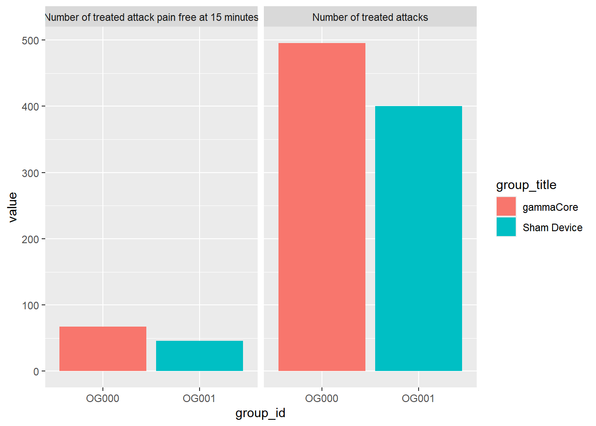
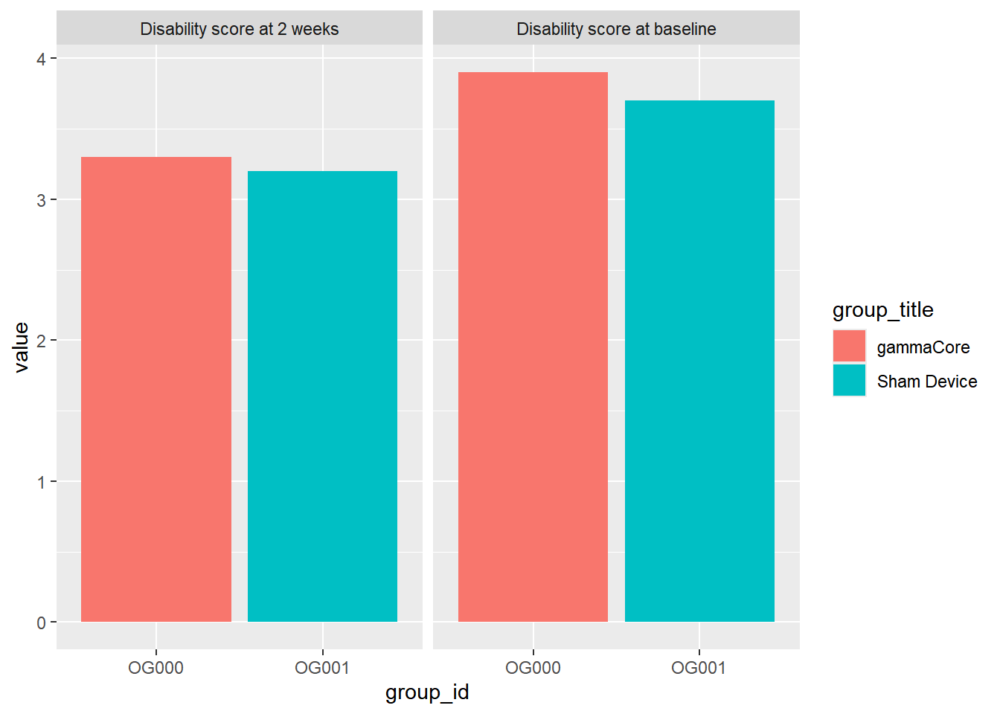
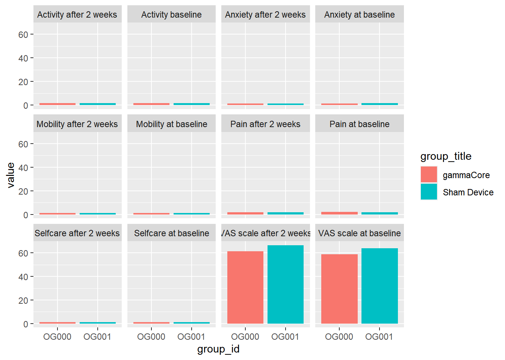
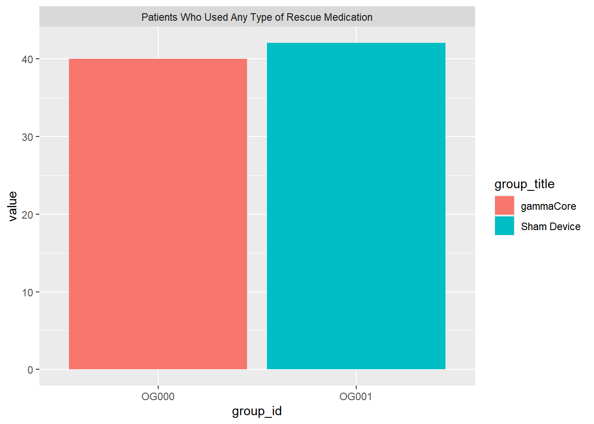
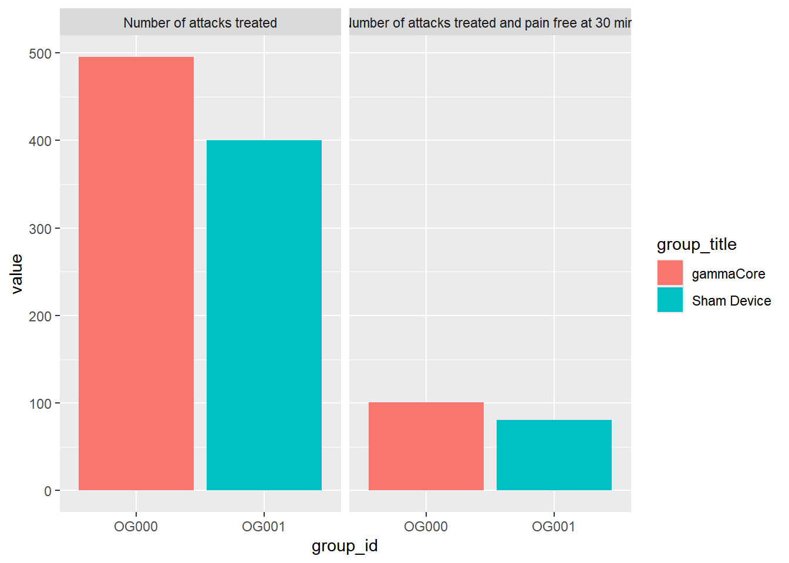
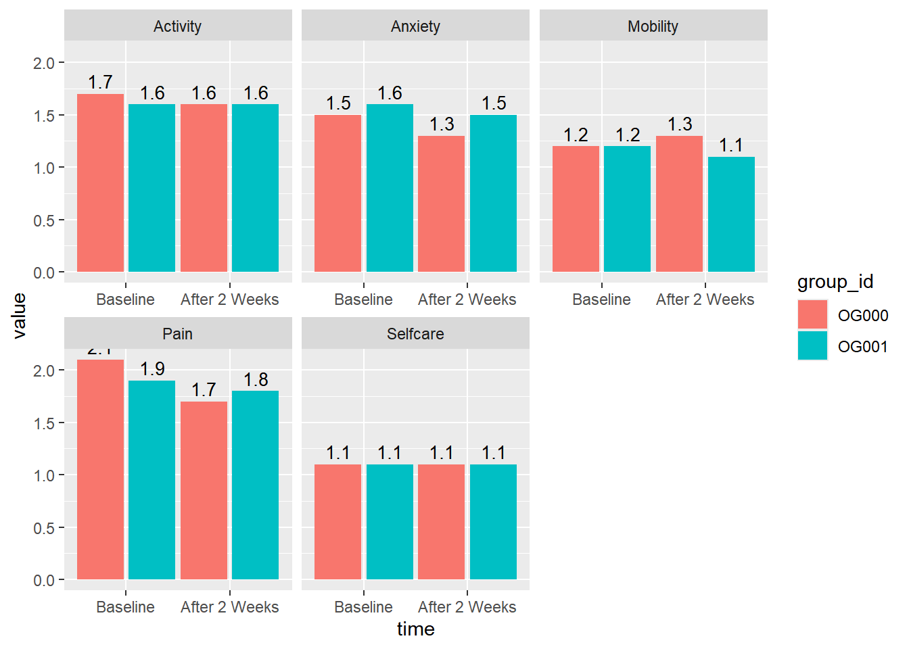
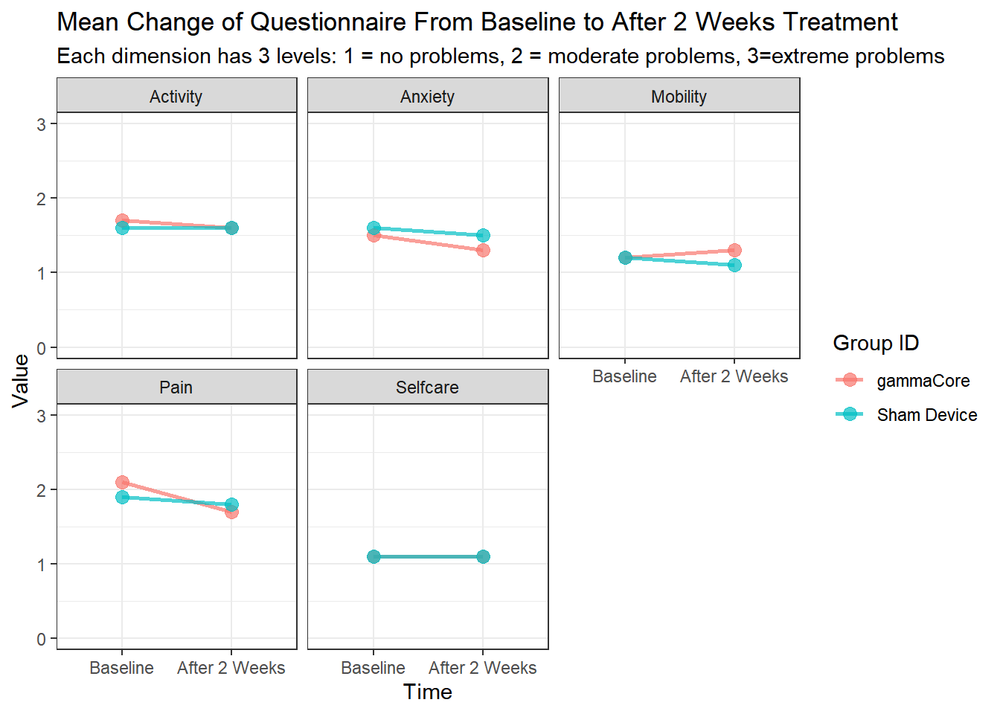
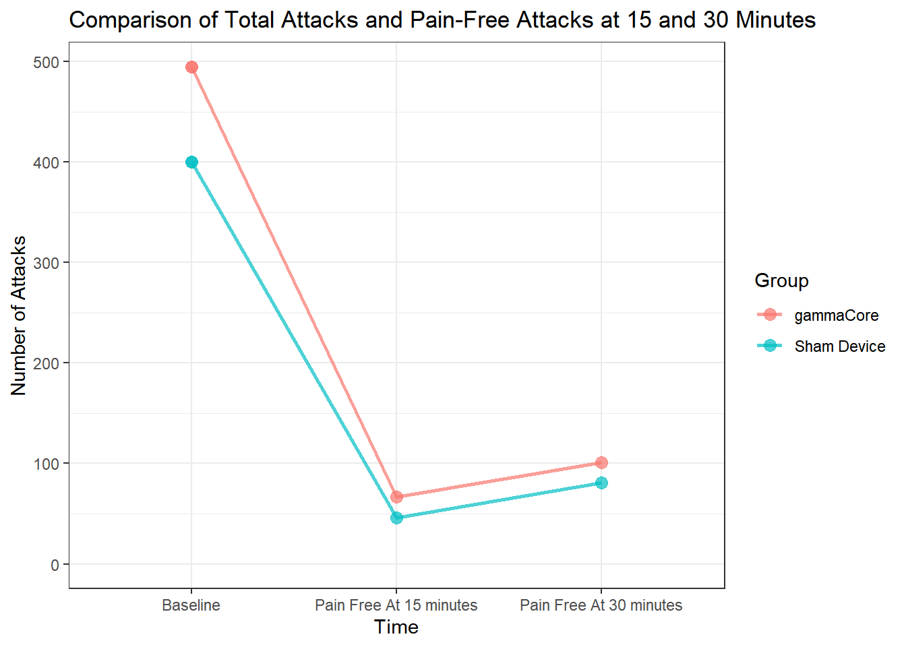

── Attaching core tidyverse packages ──────────────────────── tidyverse 2.0.0 ──
✔ dplyr 1.1.4 ✔ readr 2.1.5
✔ forcats 1.0.0 ✔ stringr 1.5.1
✔ ggplot2 4.0.0 ✔ tibble 3.3.0
✔ lubridate 1.9.4 ✔ tidyr 1.3.1
✔ purrr 1.1.0
── Conflicts ────────────────────────────────────────── tidyverse_conflicts() ──
✖ dplyr::filter() masks stats::filter()
✖ purrr::flatten() masks jsonlite::flatten()
✖ readr::guess_encoding() masks rvest::guess_encoding()
✖ dplyr::lag() masks stats::lag()
ℹ Use the conflicted package (<http://conflicted.r-lib.org/>) to force all conflicts to become errors
library(purrr)library(xml2)
Attaching package: 'xml2'
The following object is masked from 'package:httr2':
url_parse
library(knitr)
Acquiring the Data
if (file.exists("json_response.json")) { json_response <-read_json("json_response.json")} else { uastring <-"R/python data science demos, jrodriguez44@huskers.unl.edu" request <-request("https://clinicaltrials.gov/api/v2/studies?query.cond=cluster+headache&aggFilters=results%3Awith%2Cstatus%3Acom") %>%req_perform() json_response <-resp_body_json(request)# saving json_response if it didn't exist in the first place jsonlite::write_json(json_response, "json_response.json")}
first_study_full_results[1:4,] %>%ggplot(aes(x = group_id, y = value, fill = group_title)) +geom_bar(stat ="identity") +facet_wrap(~class_title)

first_study_full_results[5:8,] %>%ggplot(aes(x = group_id, y = value, fill = group_title)) +geom_bar(stat ="identity") +facet_wrap(~class_title)

first_study_full_results[9:32,] %>%ggplot(aes(x = group_id, y = value, fill = group_title)) +geom_bar(stat ="identity") +facet_wrap(~class_title)

first_study_full_results[33:34,] %>%ggplot(aes(x = group_id, y = value, fill = group_title)) +geom_bar(stat ="identity") +facet_wrap(~class_title)

first_study_full_results[35:38,] %>%ggplot(aes(x = group_id, y = value, fill = group_title)) +geom_bar(stat ="identity") +facet_wrap(~class_title)

Data Manipulation for better graphs
test <-first_study_full_results %>%mutate(event =str_remove(class_title, " at baseline| after 2 weeks"),event =str_remove(event, "at 15 minutes| at 30 min.| at 2 weeks"),time =case_when(str_detect(class_title, "after 2 weeks") ~"After 2 Weeks",str_detect(class_title, "at 2 weeks") ~"After 2 Weeks",str_detect(class_title, "at 15 minutes") ~"Pain Free At 15 minutes",str_detect(class_title, "at 30 min.") ~"Pain Free At 30 minutes",TRUE~"Baseline" ),event =case_when(str_detect(event, "Activity baseline") ~"Activity",str_detect(event, "Number of attacks treated and pain free") ~"Number of attacks treated",str_detect(event, "Number of treated attack pain free") ~"Number of attacks treated",str_detect(event, "Number of treated attacks") ~"Number of attacks treated",TRUE~ event ), time =factor(time, levels =c("Baseline", "After 2 Weeks", "Pain Free At 15 minutes", "Pain Free At 30 minutes")) )
test %>%filter(event !="Number of attacks treated"& event !="VAS scale"& event !="Patients Who Used Any Type of Rescue Medication"& event !="Disability score") %>%ggplot(aes(x = time, y = value, fill = group_id)) +geom_bar(stat ="identity", position =position_dodge(width =1) ) +geom_text(aes(label =round(value, 2)),position =position_dodge(width =1),vjust =-0.4,size =3.5 ) +facet_wrap(~event, scales ="free_x")

test %>%filter(event !="Number of attacks treated"& event !="VAS scale"& event !="Patients Who Used Any Type of Rescue Medication"& event !="Disability score") %>%ggplot(aes(x = time, y = value, group = group_title, color = group_title)) +geom_line(linewidth =1, alpha =0.7) +geom_point(size =3, alpha =0.7) +facet_wrap(~ event) +labs(x ="Time",y ="Value",color ="Group ID",title ="Mean Change of Questionnaire From Baseline to After 2 Weeks Treatment",subtitle ="Each dimension has 3 levels: 1 = no problems, 2 = moderate problems, 3=extreme problems" ) +expand_limits(y =c(0,3)) +theme_bw()

EQ-5D-3L descriptive system comprises 5 dimensions: mobility, self-care, activity, pain and anxiety. Each dimension has 3 levels: 1 = no problems, 2 = moderate problems, 3=extreme problems. Subjects indicate health state by ticking choosing appropriate statement in each dimension. Patients completed the EQ-5D-3L at baseline (the start of the randomized period and at 2 weeks).
test %>%filter(event =="Number of attacks treated") %>%ggplot(aes(x = time, y = value, group = group_title, color = group_title)) +geom_line(linewidth =1, alpha =0.7) +geom_point(size =3, alpha =0.7) +labs(x ="Time",y ="Number of Attacks",color ="Group",title ="Comparison of Total Attacks and Pain-Free Attacks at 15 and 30 Minutes") +expand_limits(y =0) +theme_bw()

Headache pain was collected at the beginning of the attack (all treated attacks) and 15 minutes and 30 minutes post treatment pain free attacks. Data was collected in the patient diary. No mention in results whether attacks that were pain free at 15 minutes are included in attacks that were pain free at 30 minutes.
FULL Results
Results
Safely extract all outcomes measures from all studies
# Extract outcome measures list for each studyall_outcome_measures <-map( json_response$studies,~pluck(.x, "resultsSection", "outcomeMeasuresModule", "outcomeMeasures", .default =NULL))# Keep only non-null studiesall_outcome_measures <-compact(all_outcome_measures)
Convert all outcome measure lists to dataframes and tag each study